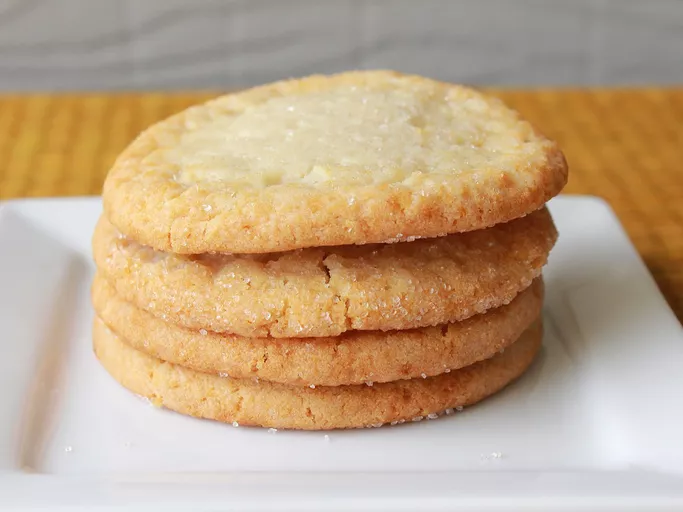

Chewy Sugar Cookies

Description
Soft, chewy sugar cookies with a sweet, buttery flavor and a lightly golden edge.
Ingredients
- 2/3 cups all purpose flour
- 1 teaspoon baking soda
- 1/2 teaspoon salt
- 2 cups white sugar
- 1 1/4 cups margarine
- 2 Large eggs
- 2 teaspoons vanilla extract
- 1/4 cup sugar for decoration
Directions
- Stir flour, baking soda, and salt together in a medium bowl.
Beat Sugar and margarine together with an electric mixer in a large bowl until smooth.
- Beat first egg into a mixture.
Beat second egg into mixture along with vanilla extract
add flour mixture and stir until dough is just combined
- Wrap dough in plastic wrap and chill for 30 minutes to 1 hour
- Preheat oven to 350 degrees F(175 degree C)
- Roll dough into walnut sized balls; roll in 1/4 cup of sugar
- Place cookies 2 inches apart unto ungreased cookie sheets and flatten slightly
- Bake in the preheated oven untul lightly browned at the edges, about 8 to 10 minutes.
Allow cookies to cool on the cookie sheets for 5 minutes before removing to a wire rack to cool completely.
Home